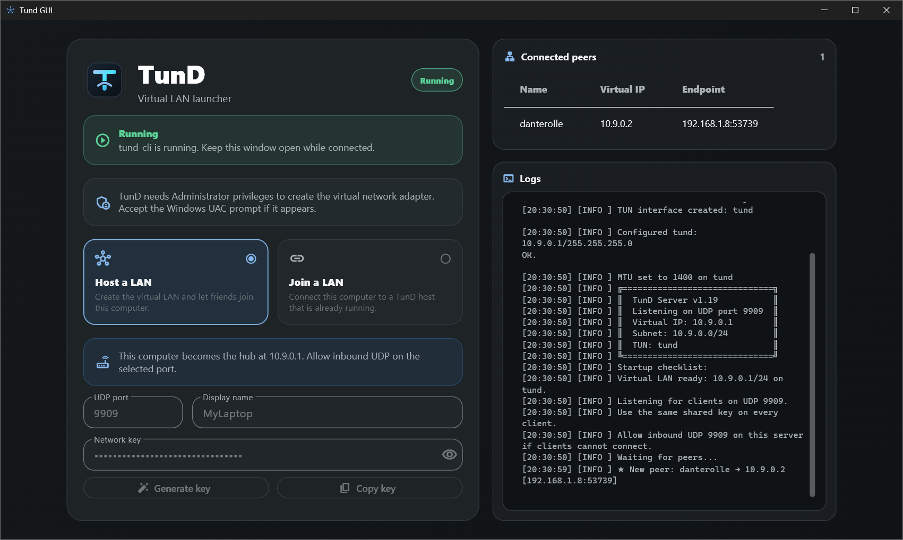
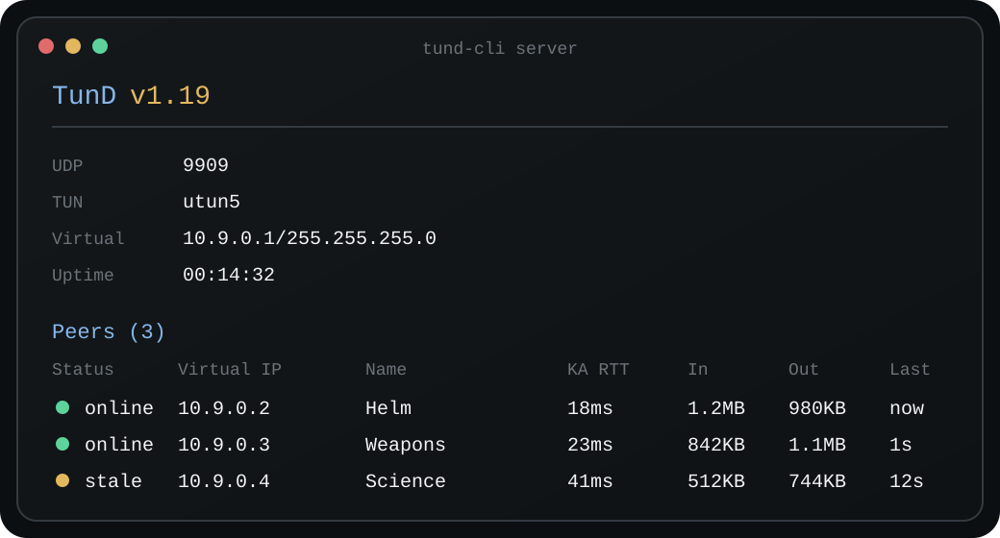

Windows
Includes the GUI, CLI, Flutter runtime files, and wintun.dll. Keep every extracted file in the same folder.
TunD creates a self-hosted IPv4 tunnel for games like Artemis and direct-IP multiplayer. Use the desktop GUI when you want a launcher, or the CLI when you want one binary and a terminal.
Use the desktop GUI for setup and sharing. Use the CLI/TUI when you want a terminal-first workflow.


Use the GUI bundle for the easiest start, or the standalone CLI for terminals, scripts, and headless hosts.
Includes the GUI, CLI, Flutter runtime files, and wintun.dll. Keep every extracted file in the same folder.
Universal Apple Silicon and Intel builds. For the GUI, extract the zip and run ./tund-gui.command next to tund-gui.app.
Do not run sudo tund-gui.app: the .app is a bundle directory, not the executable.
Choose the desktop GUI bundle or the standalone CLI binary for terminal-first usage.
Download GUI Download CLIRun one reachable machine as the host, then connect each player with the same shared network key.
# on the machine that should host the virtual LAN sudo ./tund-cli server -k "<network-key>"
# on every machine that should join sudo ./tund-cli client -s <server_ip> -k "<network-key>"
There is no registration service or hosted backend. You only need a reachable host IP, UDP port, and shared key.
Built for direct-IP IPv4 games and LAN-party workflows. It transports IPv4 packets, including subnet broadcast.
The tunnel is implemented in C. The Flutter GUI starts the existing CLI instead of reimplementing networking.
TunD encrypts traffic between each endpoint and the server. The server still decrypts packets to route them, so use a trusted host.
The tunnel needs administrator/root privileges because it creates and configures a virtual network interface.
If this machine is the host, allow inbound UDP 9909. ICMP ping can still be blocked without affecting game traffic.
netsh advfirewall firewall add rule name="TunD" dir=in action=allow protocol=udp localport=9909
If macOS blocks the unsigned app or binary, clear the quarantine flag once after extracting the release. Then start the GUI with ./tund-gui.command.
xattr -dr com.apple.quarantine ./tund-gui-darwin-universal xattr -d com.apple.quarantine ./tund-cli-darwin-universal
cd tund-gui-darwin-universal ./tund-gui.command
Clients usually only need outbound UDP. Hosts must allow inbound UDP on the selected port.
sudo ufw allow 9909/udpsudo firewall-cmd --add-port=9909/udp --permanentnc if ping is blocked.